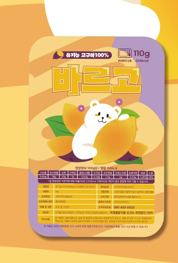

 유기농 고구마 페이스트빵에 발라 먹거나 제빵·제과 재료로 활용할 수 있는 고구마 페이스트입니다.빵과 크림치즈에 곁들이거나 제빵·제과 재료로 활용할 수 있습니다.제품 문의↗ 보관 및 조리 안내 냉동 보관냉동고에 넣어−18℃ 이하로 보관하세요. 전자레인지포장 비닐을 살짝 열고약 2분 데웁니다. 에어프라이어포장에서 꺼내180℃에서 약 6~7분 조리합니다. 제품별 조리 방법과 소비기한은 포장에 표시된 안내를 확인해 주세요.